Chaque passage dans la capitale mérite une visite du Louvre, tant le plus grand musée de Paris recèle de trésors. Il rassemble des œuvres de l’art occidental du Moyen Âge à 1848, des civilisations antiques orientales, égyptiennes, grecques, étrusques, romaines, des arts graphiques et des arts de l’Islam. De salle en salle, l’ancien palais royal dévoile ses chefs-d’oeuvre : la Joconde, Le Radeau de la Méduse, la Vénus de Milo, La Victoire de Samothrace… Au total, quelques 35 000 œuvres ! En huit siècles d’existence, le Louvre a été marqué par de nombreux courants architecturaux, de la forteresse médiévale du XIIe siècle à la pyramide de verre de Pei (1989). Dernier ajout : les architectes Mario Bellini et Rudy Ricciotti ont signé le nouvel écrin accueillant les Arts de l’Islam, une verrière ondulante recouvrant la cour Visconti et inondant de lumière les 2 800 m² du nouveau département. La visite du musée est particulièrement agréable lors des nocturnes : moins fréquenté, le Louvre offre une atmosphère différente et des vues imprenables sur la Pyramide de Pei, la cour Carrée et la Seine. Le musée du Louvre est actuellement dirigé par Jean-Luc Martinez, directeur-général de l'établissement public à caractère administratif du Louvre. Il a pris la succession d'Henri Loyrette, dont l'action a été marquée par une commercialisation de la marque Louvre vers des pays prospères, États-Unis ou pays du Golfe. Le musée continuait cependant à recevoir une grosse subvention du ministère de la Culture, car le mécénat reste trop faible pour se substituer totalement à l'argent public Le musée compte pour sa gestion 2 091 employés (fonctionnaires, contractuels et vacataires), dont 1 232 agents de surveillance, un garde pour chacune des 403 salles d’exposition, que complètent les effectifs affectés aux 900 caméras du système de télésurveillance. Les œuvres du musée sont de nature variée : peintures, sculptures, dessins, céramiques, objets archéologiques, objets d'art de divers matériaux, entre autres. Parmi les pièces les plus célèbres du musée se trouvent le Code de Hammurabi, la Vénus de Milo, La Joconde de Léonard de Vinci, La Liberté guidant le peuple d'Eugène Delacroix ou la Victoire de Samothrace restaurée en 2014.
 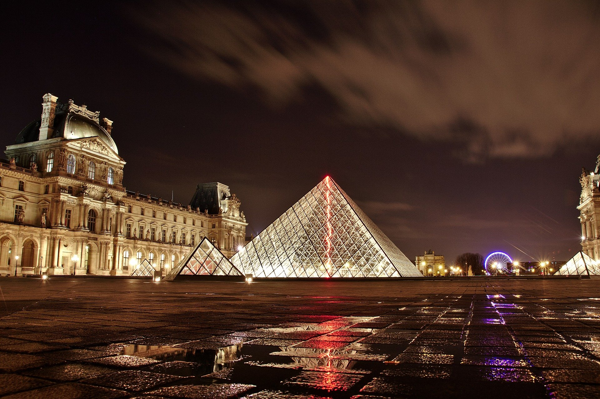
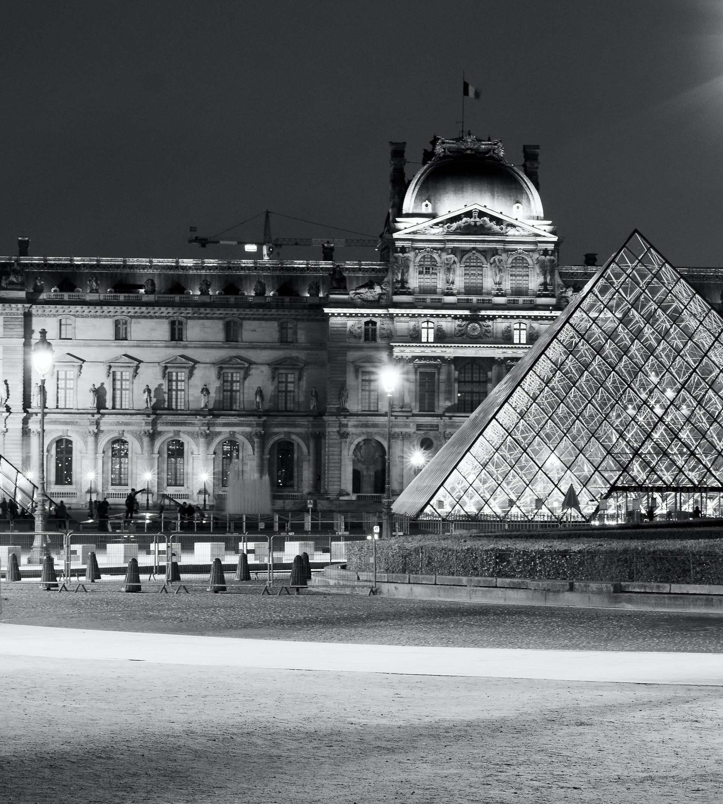
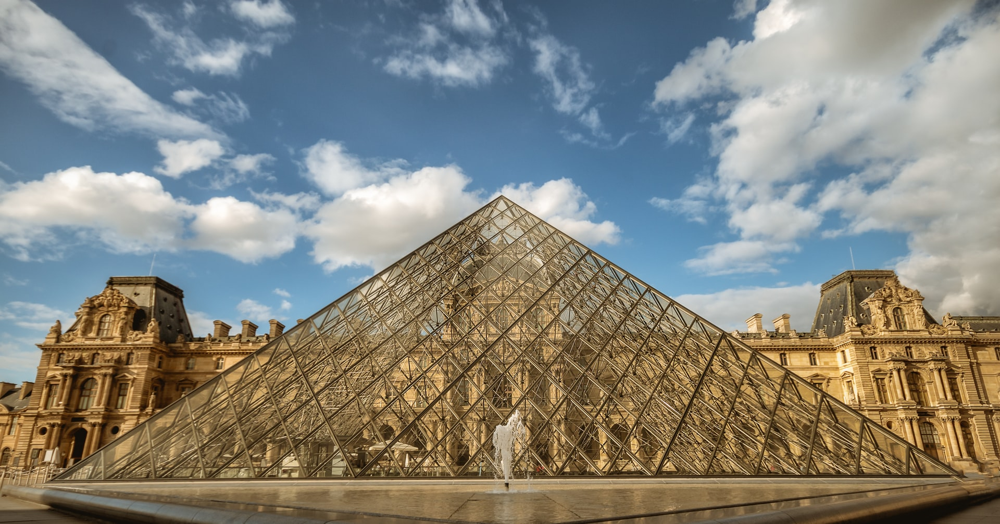
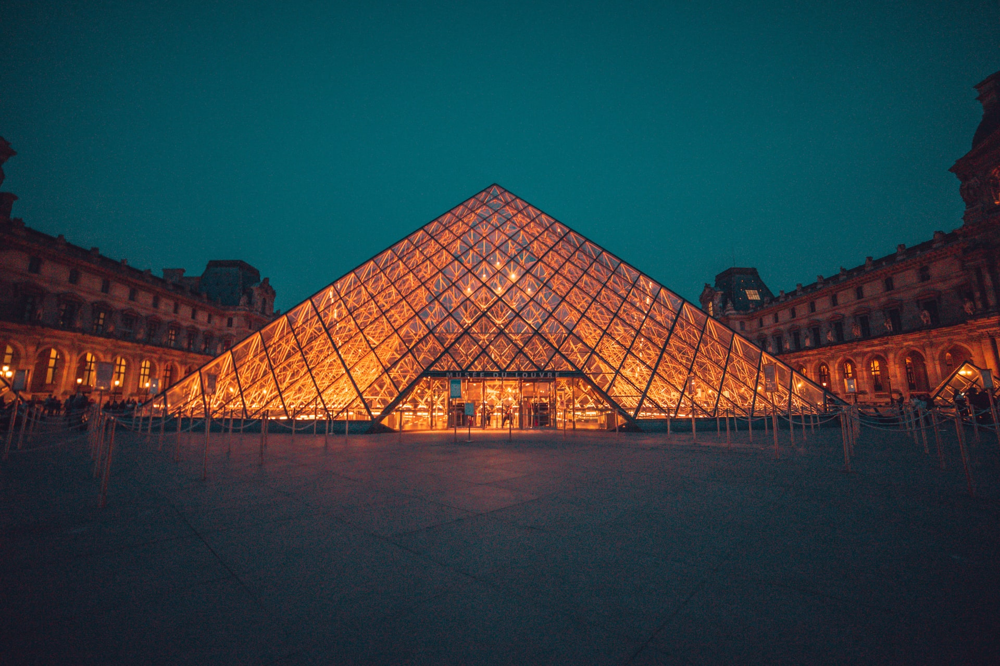
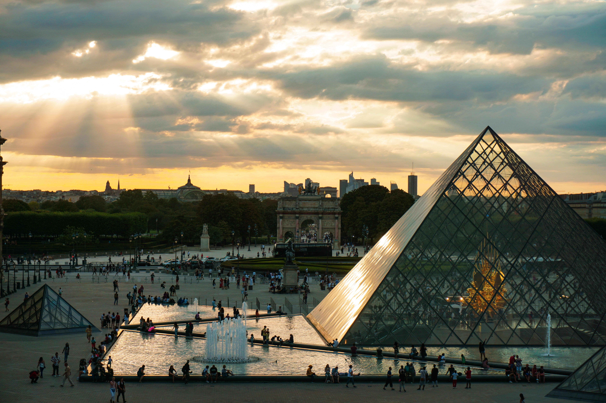
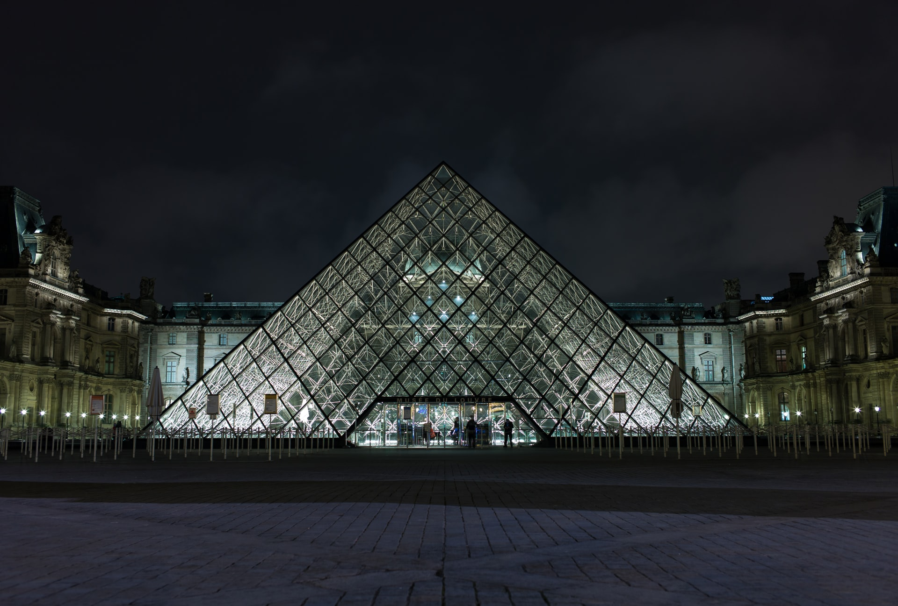
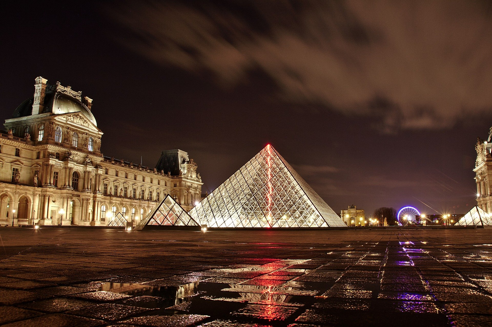
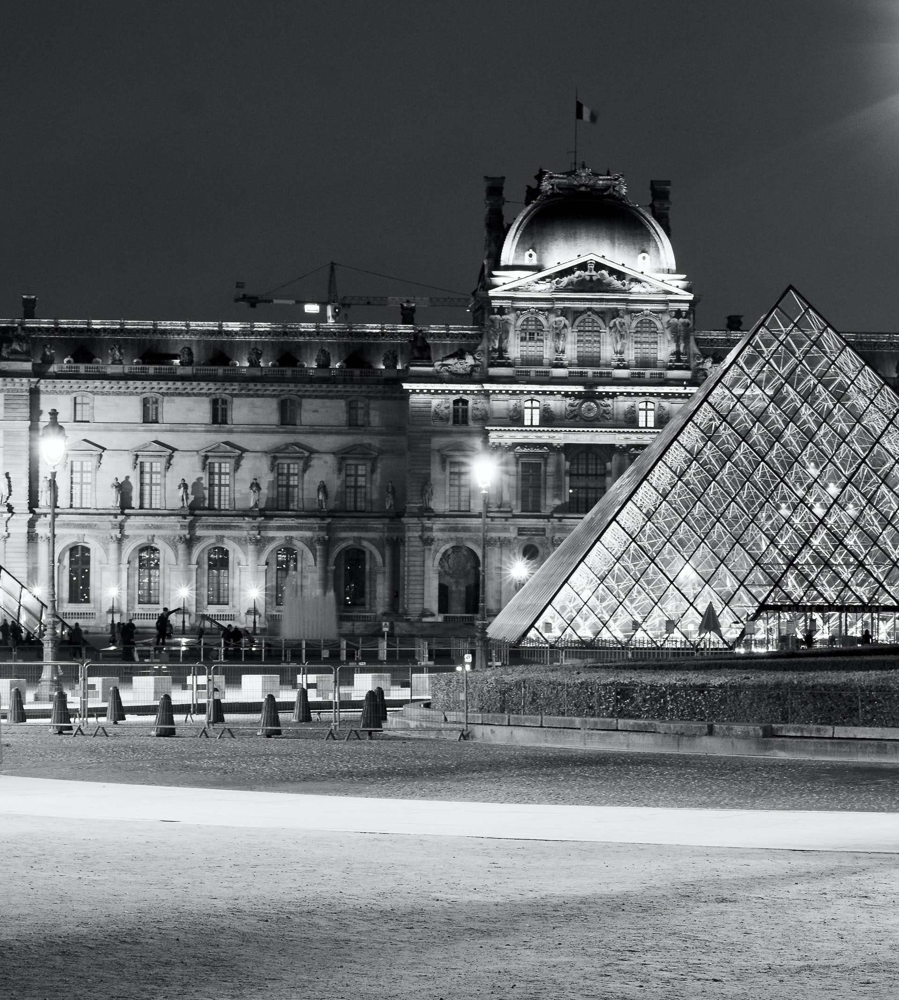
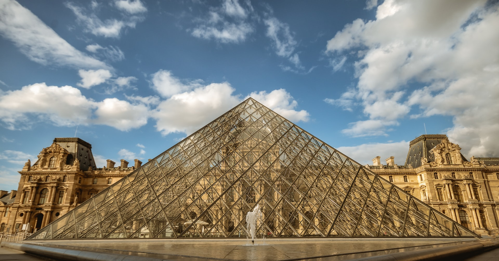
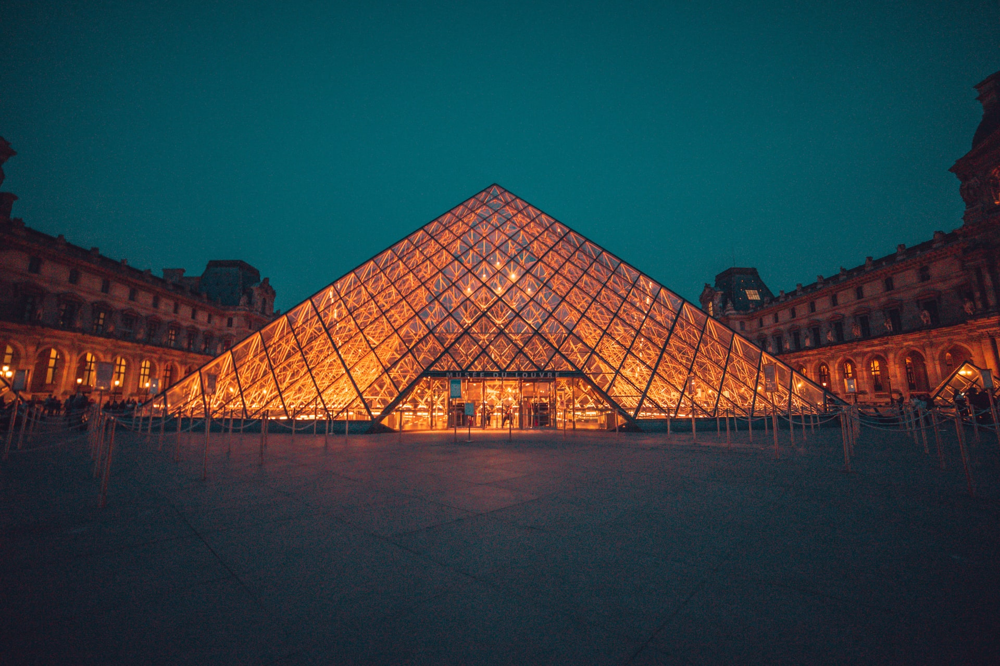
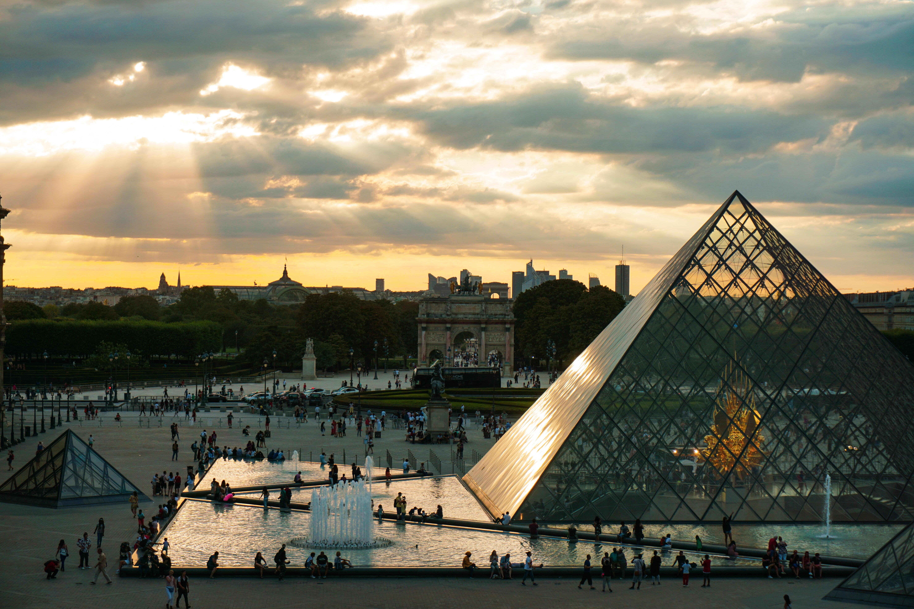
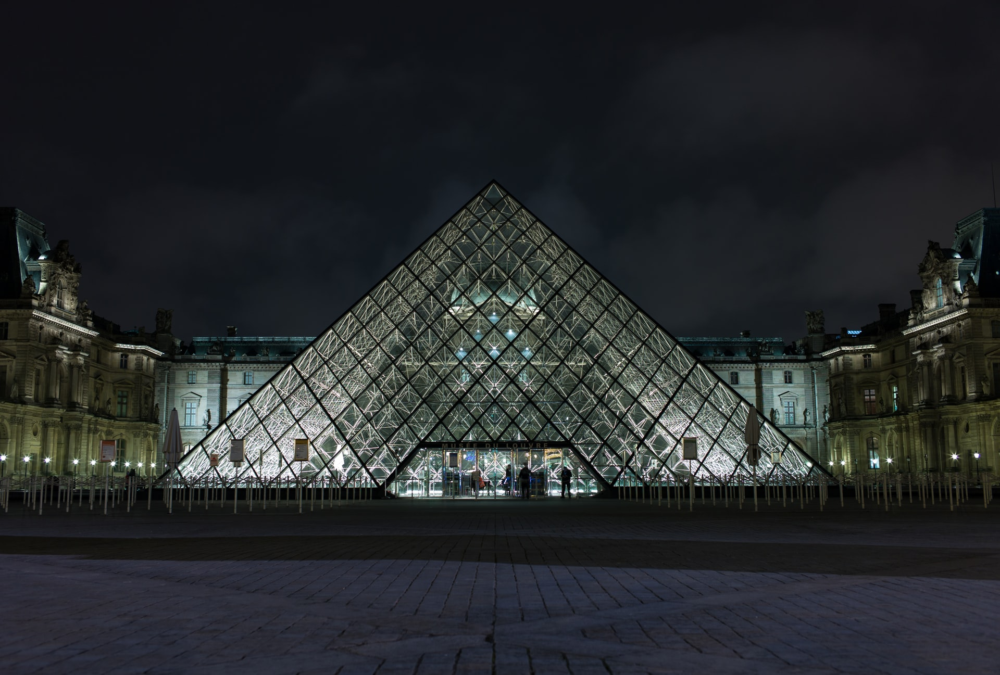